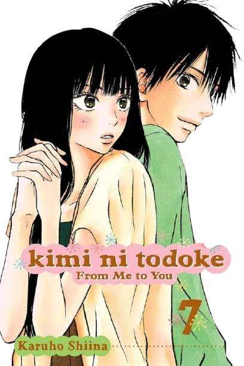
Kimi Ni Todoke is a romance and slice of life anime/manga that explores the life of Kuronuma Sawako, a 15-year-old girl who never really had any friends, due to her supposedly weird and scary behavior. Her pale skin, long straight black hair and odd demeanour led people to compare her to Sadako, the character from the horror movie The Ring, and literally run away from her whenever she approached them. Her classmates started calling her "Sadako" and making up rumors about her being a witch who brings bad luck.
The truth is Sawako is nothing more than a sweet girl who's just awkward and has a hard time interacting with others. Thankfully, someone noticed that and is willing to help her realize how great and capable she truly is.
This manga is about much more than the love story of Kuronuma Sawako and Kazehaya Shota. This is the story of a girl who is constantly outdoing herself and experiencing things she never thought she would get to experience because she dared to step out of her comfort zone. It's about seeing this girl grow up in front of your eyes and seeing how far she goes just in 3 years. It's about love, but not just the romantic kind. It's about how we navigate our relationships on the daily. It's about true friendship and girlhood. Yes, there is a mean girl, but this story twists and turns that trope in completely unpredictable ways.
I am going to be talking about this story in its entirety, including the manga. If you're reading this and only watched the anime, I can understand why you would doubt my words. At the time of writing this (and probably for a very very long time), the Kimi Ni Todoke anime has 3 seasons. Although the story touched on some more profound topics already, I believe that the best moments of each character and some of the best character arcs are yet to be finished.
Now, I understand this story is not perfect. I know many people criticize the pacing, and just how freaking long it takes for Sawako and Kazehaya to finally get together, and at times the slow burn feels more frustrating than anything. Although I understand each of Sawako and Kazehaya's actions and just how long it all takes, as a viewer, I agree that it's extremely frustrating. However, I believe that what makes this story special is not really the slow burn between Sawako and Kazehaya. To me, this story has always been about Sawako and her growth as a person. Her relationship with Kazehaya is one of the ways the story demonstrates that. Plus, the side characters are all extremely compelling and exciting to watch.
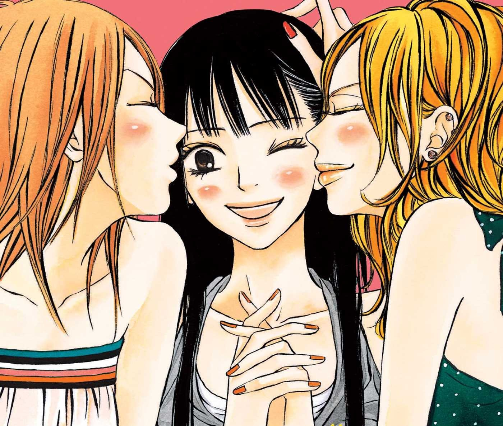
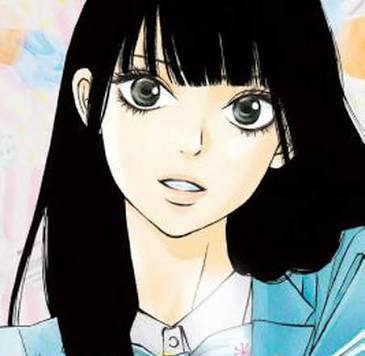
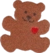
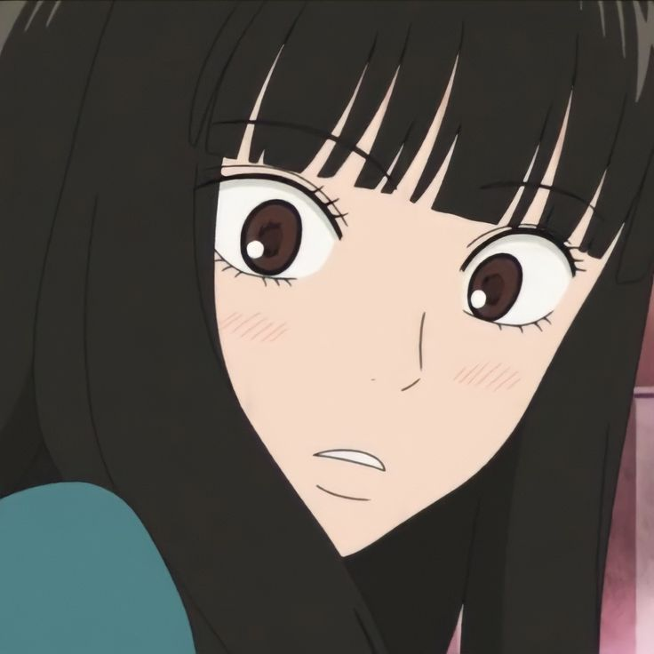
Our beloved main character. She's a big introvert who struggles socially, but has the biggest heart. She might be clueless when it comes to social interactions, but she's very smart academically. She's organized, dilligent and competent in all she does. She always gives everything her all, a trait that her friends admire her for. Her hobbies are crocheting, gardening, running, cooking and cleaning. My favorite thing about her character is her optimism no matter the situation and I just love how her femininity and gentle nature is never used by the story to make her seem lesser than others. Instead, these traits are portrayed as a strength.
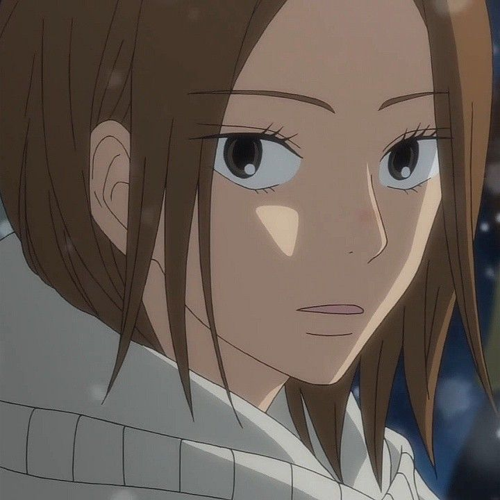
My favorite character! Chizuru becomes Sawako's best friend alongside Ayane very early on. Chizuru is extroverted and impulsive. She wears her emotions on her sleeve and is very straightforward and honest. She doesn't really think before she speaks. Chizuru might not be the smartest, but she is a great person who always stands up for what's right. She's great at sports and excels at basically all of them. She's also very physically strong, having won fights against 99 dudes when she was in middle school. Her 100 streak was ruined by Ryu, her childhood best friend, whom she lost against.
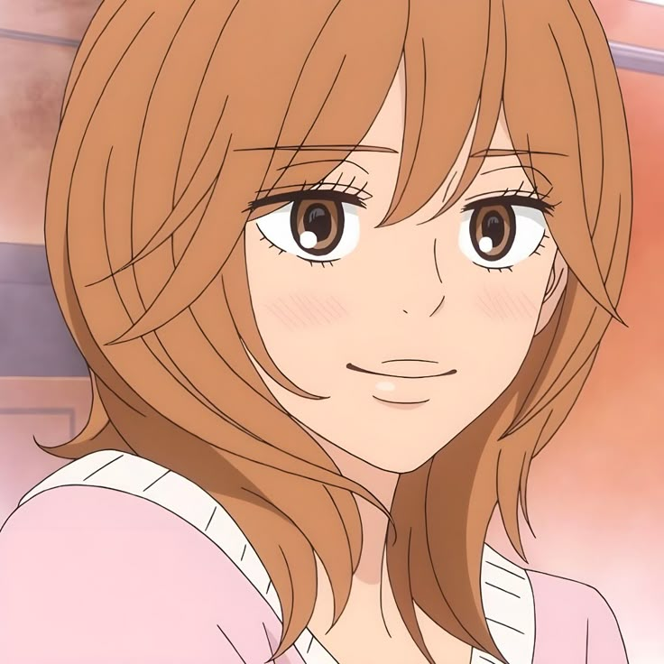
Ayane is Chizuru's best friend, and also becomes Sawako's best friend early on in the story. Honestly, there's so much to say about her, I don't even know where to start. Ayane comes off as a confident, know-it-all kinda girl. She never lets anyone step on her and is VERY good at navigating social situations. She is smart and cunning, the kind of character who could be a villain (she even has a villain laugh!), but is a good person who only uses her cunning tactics on those who deserve it. Although she is very brave and smart, she's actually very insecure and relies on male validation to feel better about herself, even if the men she is with are never good for her. She doesn't think she's capable or deserving of good things so she is okay with settling for less. She also has a very different relationship with love from the other girls. I think her character adds an entire layer of depth to this story, and shows that romantic relationships can look very different from one another and are not always innocent sunshine and rainbows.
Kurumi (I'm not legally allowed to call her by her first name, okay?) is a girl from a different class who went to the same middle school as Kazehaya, Ryu and Chizuru. She has liked Kazehaya ever since then. When talking to people, she is always very sweet, kind and helpful, but it's obvious (to the viewer (and Ayane, apparently)) that it's all an act she puts up. In reality, she's a hot-headed and manipulative person. She's willing to conjure plans to make anyone that Kazehaya might like look bad, so she can be the one he chooses in the end. Yeah, I know she sounds terrible, well she is, but she does get the best redemption arc. When I watched the anime I hated her so much and I couldn't forgive her but after reading the manga she completely won me over and I love her now.
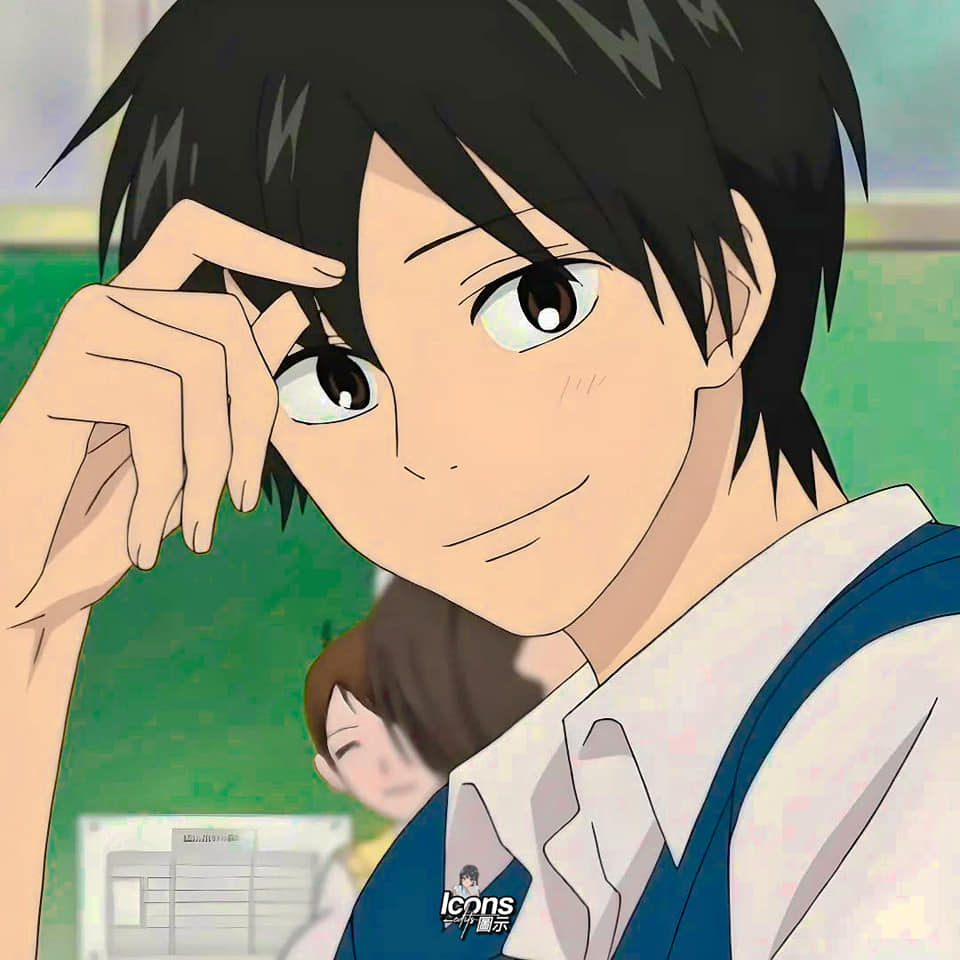
Sawako's love interest. He is an outgoing guy who's very popular, both with the guys and the girls. He's charming and people are just naturally drawn to him. However, he is never pressured by his popularity and does not let it impact his decisions and morals. He will not hesitate to call people out for their behavior, and hates people who spread rumors. He always tries to make everyone feel welcomed and included and is always there to help others. Despite not seeming like it at first glance, he is quite stubborn and short-tempered, but he is very self-aware of these traits and never uses them to take advantage of others. He used to play baseball in middle school with Ryu, but quit in highschool.
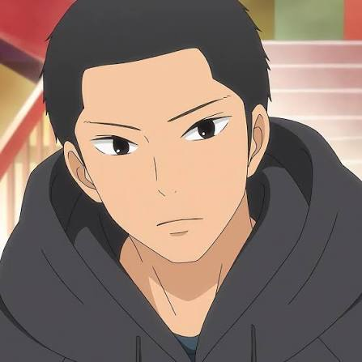
Ryu is Kazehaya's best friend and Chizuru's childhood friend. He plays baseball and is very dedicated to the sport. He's a quiet guy who keeps to himself and very rarely says what he thinks. Though, when he does, he always says the right thing people need to hear. He never expresses his emotions, so he is misunderstood by others sometimes, but he is a reliable friend. Ryu is a very unbothered guy who doesn't really care what others think of him. Truly, Ryu is a simple man. All he needs in life is Chizuru, baseball, onigiri and Kazehaya's dog.
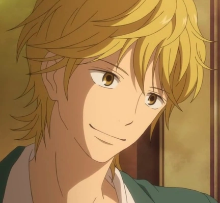
Miura Kento was the new student in class in the second year of highschool and sat next to Sawako. He quickly became interested in her due to her quirky nature. He's a very popular guy due to his looks and charisma. He quickly becomes interested in Sawako and tries to help her be more sociable. It's difficult to understand his true motives at first. The truth is he is just a sweet guy who is surprisingly dense at times and doesn't really understand Sawako until later on in the story. He seems cunning at first, but he isn't. He only has good intentions in everything he does, even if he doesn't always make the right call.
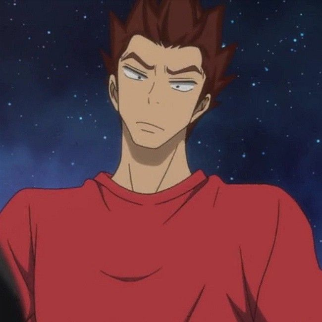
Also known as Pin, Arai is the students' homeroom teacher and PE teacher. He is also Ryu's baseball coach. For a long time throughout the story, Pin seems to just be the comedic relief side character. The goofy teacher who likes making fun of the students, but there's more to him than that. Chizuru and Ayane always make fun of him, saying that he spends so much time around the students because he has no life, but later we understand that he does that so he can truly understand the kids and help them. He becomes a true teacher and life coach to the kids when they have to make big decisions. He understands them like no one else does and gives them the right advice at the right time.